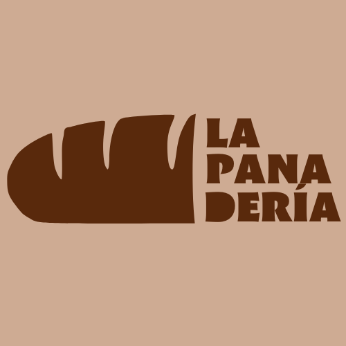

Envío Nacional
Recoge en Tienda
Panaderos Artesanos desde 1891
3 generaciones de maestros panaderos nutren el auténtico espíritu Gallofa & Co y nuestra pasión por el pan.
Contacta con nosotros
Isla del Óleo Polígono de Nueva Montaña, 61 Santander 39011 CANTABRIA
PAN Y DULCES ARTESANOS DESDE 1930 Recuperando los sabores de antaño
Somos una panadería artesanal especializada en la elaboración de pan y dulces tradicionales de Cuenca. Queremos recuperar el sabor de antaño, ese sabor capaz de hacernos revivir recuerdos de nuestra infancia.
¿QUÉ OFRECEMOS?
Productos manchegos además de encontrar todas nuestras elaboraciones.
¿QUÉ HACEMOS?
Panes elaborados con harinas e ingredientes frescos y un amplio surtido de dulces tradicionales.
¿DONDÉ ESTAMOS?
Estamos en la provincia de Cuenca: en Tarancón, cerca de Villares del Saz y en Cuenca, capital.